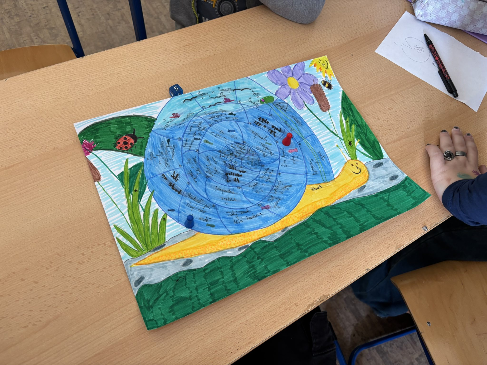
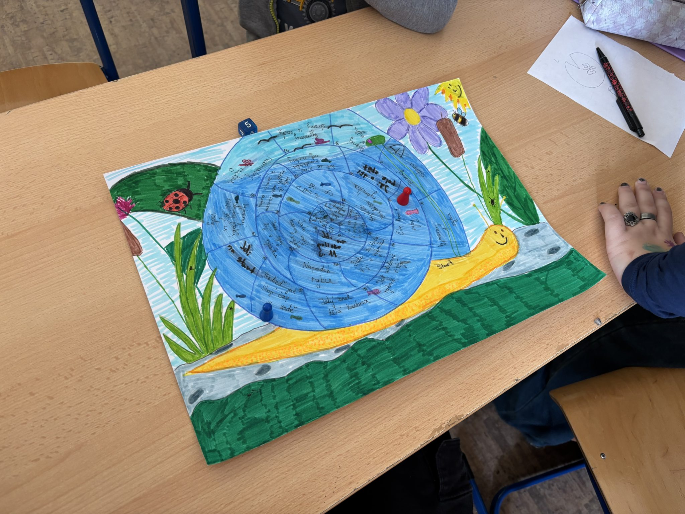

Březnové setkání s předškoláky 13. 3. 2025 V pondělí 10. března jsme se opět setkali s předškoláky. Každý z nich už má svoji dvojici osmáku, se kterou soutěží a hraje naučné hry. Často se jedná o přírodovědné […]
 
